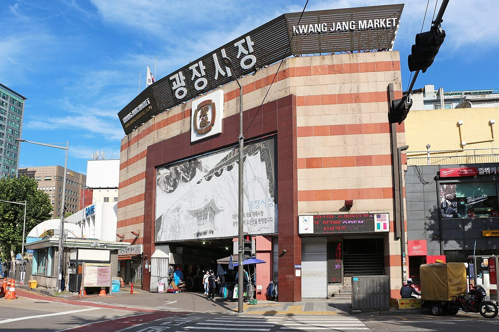
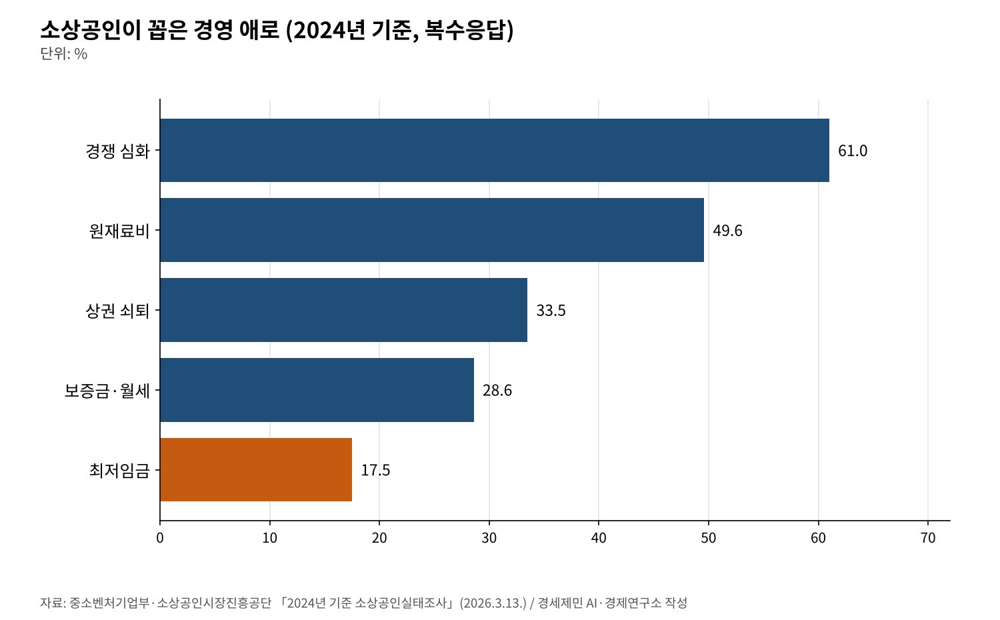
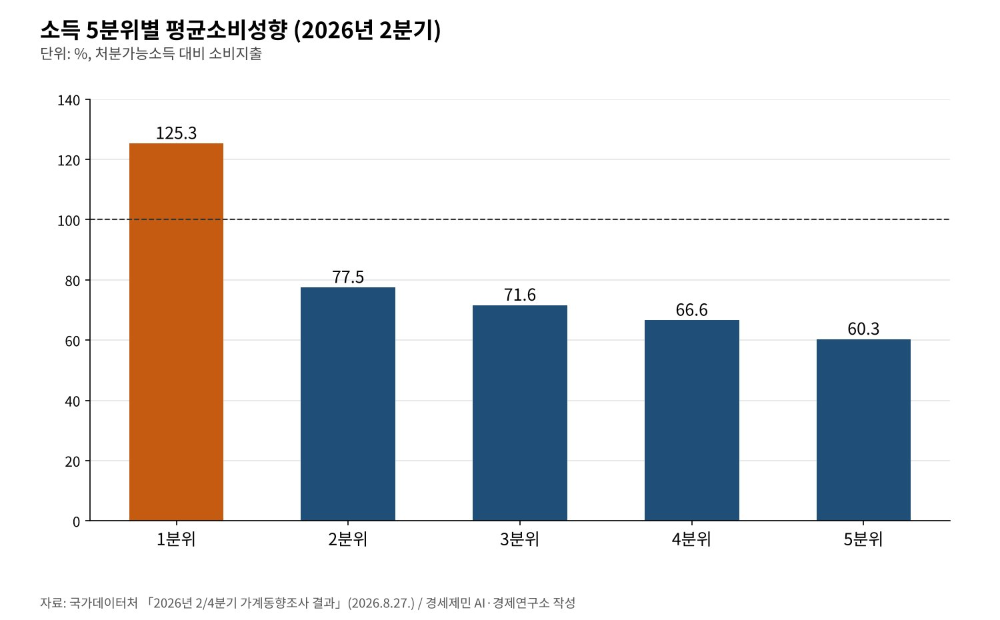

[자영업자②] 누가 자영업자와 노동자를 싸우게 만드는가
소상공인 경영 애로 1위는 경쟁 심화 61.0%, 최저임금은 17.5%로 다섯째
9월 고용원 있는 자영업자 8000명 줄고 '나홀로 사장' 4만9000명 늘어
자영업자 대출 1095조5000억원, 12월 31일부터 가맹점주 단체 협의제 시행
2027년 최저임금이 시간당 1만700원으로 정해졌다. 올해보다 3.7% 올랐다. 고시 전 이의 제기 기간에 민주노총과 소상공인연합회가 모두 이의를 냈다. 한쪽은 너무 낮다고, 다른 쪽은 너무 높다고 했다. 해마다 되풀이되는 풍경이다.
그러나 소상공인이 꼽는 가장 큰 어려움은 인건비가 아니다. 중소벤처기업부 실태조사에서 경영 애로 1위는 경쟁 심화(61.0%)였다. 최저임금은 17.5%로 다섯째다. 원재료비와 상권 쇠퇴, 임대료가 그 위에 있다.
자영업자와 노동자가 최저임금을 두고 맞서는 동안 매출과 비용을 정하는 더 큰 힘은 다른 곳에 있다. 이 글은 2026년 가을까지 나온 공표 통계로 그 구조를 짚는다. 누가 이기고 지는지를 따지기보다 비용과 매출이 어디서 정해지는지 본다.

1. 사장님은 줄고 '나홀로 사장'은 늘었다
국가데이터처 2026년 9월 고용동향을 보면 고용원 있는 자영업자는 145만7000명이다. 1년 전보다 8000명 줄었다. 고용원 없는 자영업자는 428만명으로 4만9000명 늘었다. 무급가족종사자는 4만6000명 줄었다.
직원을 두는 사장이 줄고 혼자 일하는 사장이 늘었다. 같은 달 숙박·음식점업 취업자는 9만7000명(4.1%) 줄었다. 임시근로자 8만1000명, 일용근로자 5만5000명도 줄었다. 반면 상용근로자는 25만3000명 늘었다.
소상공인 전체로 보면 2024년 사업체는 613만4000개, 종사자는 961만명이다. 사업체당 종사자는 1.60명에서 1.57명으로 줄었다. 도소매업이 210만개로 34.2%, 숙박·음식점업이 79만6000개로 13.0%다.
2. 인건비보다 큰 경쟁, 원재료, 임대료
소상공인실태조사의 경영 애로는 복수 응답이다. 경쟁 심화를 꼽은 비율이 61.0%로 가장 높다. 원재료비 49.6%, 상권 쇠퇴 33.5%, 보증금·월세 28.6% 순이다. 최저임금은 17.5%다.

경쟁 심화는 같은 상권에 같은 업종이 몰린 데서 온다. 원재료비는 공급자가 정한다. 프랜차이즈 가맹점이라면 원재료 상당 부분을 가맹본부가 정한 필수품목으로 산다. 임대료는 건물주와의 계약이 정한다.
공정거래위원회 통계를 보면 2025년 말 가맹점은 37만9739개로 4.0% 늘었다. 가맹본부는 9960개로 13.2% 늘었다. 가맹점 평균 매출은 2024년 약 3억7000만원이다. 공정위는 일부 가맹점의 평균 차액가맹금이 늘었다고 밝혔다.
필수품목 규율도 아직 느슨하다. 공정위가 8월 주요 가맹본부 100곳을 점검하자 필수품목이 있는 77곳 가운데 10곳은 계약서에 필수품목 사항을 전혀 적지 않았다. 2025년 1월부터 기재가 의무인데도 그랬다.
3. 노동자의 소득이 사장님의 매출이다
자영업자의 매출은 결국 누군가의 소비다. 국가데이터처 가계동향을 보면 2026년 2분기 소득 하위 20% 가구는 처분가능소득보다 많은 125.3%를 소비했다. 상위 20%는 60.3%를 썼다.

하위 20% 가구의 월평균 소비지출은 137만2000원이다. 이 가운데 음식·숙박에 13.6%를 쓴다. 저소득 가구에 들어간 돈은 상당 부분 곧바로 동네 식당과 가게로 돌아온다. 임금이 낮으면 동네 매출도 낮다.
물론 인건비는 영세 사업장에 직접 부담이다. 최저임금위원회는 2027년 최저임금의 영향을 받는 근로자를 사업체 조사 기준 66만명, 가구 조사 기준 297만8000명으로 추정했다. 부담과 매출은 같은 숫자의 양면이다.
4. 빚과 본사, 그리고 구조
한국은행 6월 금융안정보고서를 보면 자영업자 대출은 2026년 1분기 말 1095조5000억원이다. 전체 금융권 대출의 28.5%다. 한국은행은 영세 자영업자와 대면서비스업의 부실 위험, 고연령 자영업자의 부채 확대를 짚었다.
한국은행은 부동산임대업에 자영업자 수와 대출이 몰린 점도 구조 변화로 꼽았다. 임대업 자영업자와 임차 자영업자가 같은 '자영업자'로 묶이지만 처지는 다르다. 한쪽의 임대수입이 다른 쪽의 고정비다.
제도는 조금씩 움직인다. 12월 31일 시행되는 개정 가맹사업법은 가맹점주 단체 등록제와 등록 단체에 대한 가맹본부의 협의 의무를 도입한다. 공정위 시행령안은 같은 브랜드 점주의 10% 이상이나 1000명 이상이 가입하면 등록할 수 있게 했다.
최저임금 표결은 사용자위원안 15표, 근로자위원안 11표로 끝났다. 공익위원들은 같은 날 정부에 제도개선 추진단 설치를 권고했다. 해마다 같은 공방이 되풀이된다는 반성이 결정 기구 안에서도 나왔다.
5. 같은 편에 설 자리
첫째, 협상 테이블을 넓혀야 한다. 최저임금위원회에서 노동자와 소상공인이 맞서는 동안 원재료값과 임대료를 정하는 쪽은 그 자리에 없다. 가맹점주 단체 협의제가 그 빈자리를 메우는 첫 장치가 될 수 있다.
둘째, 비용 구조를 함께 보아야 한다. 경영 애로에서 보증금·월세(28.6%)가 최저임금(17.5%)보다 앞선다. 임대료와 필수품목 가격의 투명성을 높이는 일은 노동자 임금을 깎지 않고도 사장님의 숨통을 틔운다.
셋째, 소득이 순환하는 구조를 지켜야 한다. 하위 20% 가구는 번 돈보다 많이 쓴다. 이들의 소득이 동네 매출로 돌아온다. 임금과 매출을 서로 빼앗는 관계로만 보면 둘 다 가난해진다.
자영업자와 노동자는 같은 동네 경제의 두 바퀴다. 한쪽이 무너지면 다른 쪽도 멈춘다. 최저임금 숫자를 두고 싸우는 데서 그치지 않고 경쟁과 임대료, 본사와의 거래 조건까지 함께 테이블에 올릴 때 둘은 같은 편에 선다.
참고문헌
기관 자료
- 국가데이터처 사회통계국 고용통계과, 「2026년 9월 고용동향」, 2026년 10월 16일. KDI 경제교육·정보센터 게재. https://eiec.kdi.re.kr/policy/materialView.do?num=288191
- 중소벤처기업부·소상공인시장진흥공단, 「2024년 기준 소상공인실태조사 결과 발표」, 2026년 3월 13일. KDI 경제교육·정보센터 게재. https://eiec.kdi.re.kr/policy/materialView.do?num=277938
- 국가데이터처, 「2026년 2/4분기 가계동향조사 결과」, 2026년 8월 27일. KDI 경제교육·정보센터 게재. https://eiec.kdi.re.kr/policy/materialView.do?num=285882
- 한국은행, 「금융안정보고서」(2026년 6월), 2026년 6월 24일. KDI 경제교육·정보센터 게재. https://eiec.kdi.re.kr/policy/materialView.do?num=283152
- 공정거래위원회, 「2025년 가맹사업 현황 통계 발표」, 2026년 4월 13일. KDI 경제교육·정보센터 게재. https://eiec.kdi.re.kr/policy/materialView.do?num=279336
- 공정거래위원회, 「필수품목의 가맹계약서 기재 의무 이행실태 점검 결과」, 2026년 8월 12일. KDI 경제교육·정보센터 게재. https://eiec.kdi.re.kr/policy/materialView.do?num=285311
- 공정거래위원회, 「가맹사업법 시행령 입법예고 및 가맹점주단체등록·협의절차 고시 행정예고」, 2026년 8월 3일. KDI 경제교육·정보센터 게재. https://eiec.kdi.re.kr/policy/materialView.do?num=285035
- 고용노동부(최저임금위원회), 「2027년 적용 최저임금안 시간급 10,700원」(보도참고자료, 공익위원 권고문 붙임), 2026년 7월 14일. KDI 경제교육·정보센터 게재. https://eiec.kdi.re.kr/policy/materialView.do?num=284266
- 고용노동부, 「2027년도 적용 최저임금 시간급 10,700원」(고시 보도자료), 2026년 8월 5일. KDI 경제교육·정보센터 게재. https://eiec.kdi.re.kr/policy/materialView.do?num=285106
언론 보도
- 이유주, "2027년 최저임금 시급 1만 700원 확정…올해보다 3.7% 인상", 베이비뉴스(다음 게재), 2026년 7월 15일. https://v.daum.net/v/20260715114950214
- 전국인력신문, "2027년 최저임금 시급 10,700원 확정…역대 8번째 낮은 인상률, 업종별 차등 또 불발", 2026년 7월. https://www.kjob.news/news/505843
- 이투데이, "9월 취업자 11.3만명 증가, 증가 폭은 축소…청년층 46개월째 감소 [상보]", 2026년 10월 16일. https://www.etoday.co.kr/news/view/2636460
- 한국사회복지저널, "2026년 9월 고용동향", 2026년 10월. https://www.ksw-news.com/news/articleView.html?idxno=3048340
[사진 출처]
- [사진1] Bgag, "Gwangjang Market, Seoul 01.jpg", 위키미디어 공용, CC0. https://commons.wikimedia.org/wiki/File:Gwangjang_Market,_Seoul_01.jpg
※ 이 기사는 AI 프로그램 클로드를 활용해 작성했습니다.
관련기사
- [경세제민] 자영업자① 자영업자는 사장인가 노동자인가
- [경세제민] 최저임금③ 독일 벌금 7억원, 한국은 2000만원
- [서평] 슘페터 『경제분석의 역사』 1권, 300년 전 질문이 오늘도 유효하다
- [서평] 『진보를 위한 주식투자』, 일하는 사람은 자본시장을 외면해도 되는가
저작권자 © AI경세제민 무단전재 및 재배포, AI학습 및 활용 금지